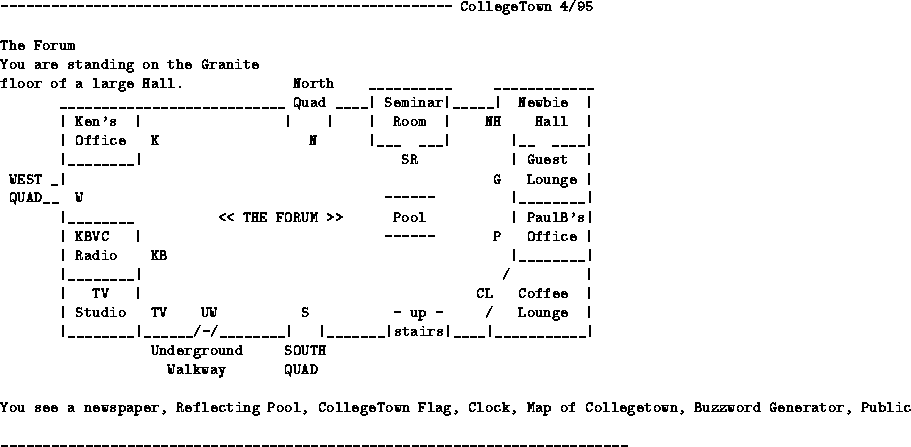

We could observe several models for the welcome area:

Figure 3.1: The Welcome screen of CollegeTown
Let's now have a closer look a Diversity University MOO (DUM). DUM is interesting because of its size and solutions found there may be of general interest. At DUM one lands first in a general welcome room which has been rather designed to keep certain behavior or people from this MOO.
------------------------------------------------------------------- DU 4/95
***** DIVERSITY UNIVERSITY IS NOT A GAME *****
It is a place where many people from various backgrounds come to do work and
interact in a mature and responsible environment, and as a visitor you are
expected to behave in an appropriate manner.
Swearing, offensive language, obscenity, harassment, and rudeness will
not be tolerated here. If you must do that, do it somewhere else.
If you're not sure if something is ok or not, ASK FIRST. If someone asks
you to stop doing something they find objectionable, STOP. For a more
complete list of what behavior is and is not considered appropriate here,
type 'help manners' once connected.
NOTE: You can and will be booted off the system and barred further access to
this MOO if you cannot behave responsibly. Under some circumstances
your actions on this system can be logged or monitored as well. Your
connection site is being displayed in your description; anyone can
see where you are connected from.
If you do not wish to agree to these conditions, type @quit to leave the MOO.
[Press return to continue or type '@quit' to disconnect]
Orientation Room
Welcome to Diversity University! This is the Orientation room and is
deliberately quiet to allow new users to read the helps. This room is in the
Student Union so when you are ready to explore, just leave by the exit to the
hall or read the help on @rooms.
ATTENTION Teachers! - Please do not bring your students onto DU as guests.
Please ask a wizard about our VSPO system for bringing on groups.
help newbie - Basic help for those new to this
help theme - Describes the purpose of Diversity Univ.
map - Displays a map of Diversity Univ. You are currently
located in the sw corner of the Student Union
To see this room description again, type: look
Exits include: [out] to Learning Hall (3-4)
You see Application Folder, DU manners (look manners), MOOTutorials, A map of
Diversity University, and Social and other MOOs List (read sml) here.
---------------------------------------------------------------------------
Next, people land in a room where they are given a chance to look at basic MOO commands and are also pointed to further information.
------------------------------------------------------------------- DU 4/95 Learning Hall (3-4) This is one segment of the hall leading off the Main Foyer of the Student Union. To reach the Student Union, travel east. Type: tutorial to enter a walk-through tutorial of MOO basic commands. Type: @go edu then southeast to get to more tutorials and helps in the MOOteach learning center. Exits include: [east] to Learning Hall (1-2), [south] to Orientation Room, [tutorial] to An Introduction You see MOOing Services Board (Type --> Look board) (3 notes) here. ---------------------------------------------------------------------------
Next people can enter a corridor ...
------------------------------------------------------------------- DU 4/95 Learning Hall (1-2) A long, quiet hallway. A door leads east back to the main entry. This hall leads to rooms that will teach basics about many things, such as how to navigate and use a MOO as well as how to study better. Feel free to explore the rooms. Exits include: [east] to Student Union Center, [west] to Learning Hall (3-4), [south] to study aids (public) ---------------------------------------------------------------------------
... which leads to the Student Union Center which contains all the information a regular user of this MOO is interested in.
------------------------------------------------------------------- DU 4/95 Student Union Center -------------------- You are standing in the Student Union of Diversity University. There is an old red couch in the corner, usually occupied by sleeping students. Several halls lead from the room, and large glass doors on the southern wall lead outside. Warning: Anything said in this room is subject to being logged for research purposes. Research is vital to the continued survival of DU so we hope you will understand. Exits include: [west] to Learning Hall (1-2), [south] to LSU Street (200 block), [east] to Underground corridor (SU <-> Admin), [north] to Entertainment Hall, [northeast] to Student Union Elevator, [northwest] to Universities Room, [Up] to Help Desk SPrince (asleep), JackieC (asleep), RayJ (asleep), Jason_J (Always keeping one eye open!), and Kaspar (idling) are standing here. You see Transporter Booth, DU Places of Interest (poi), Test Survey, DU Directory, EVENTS (8 notes), Yellow Pages!, Aquarium, and Diversity Survey here. ---------------------------------------------------------------------------
Diversity University is currently the biggest Educational MOO and several information and navigation tools had to be created. Of particular interests are: